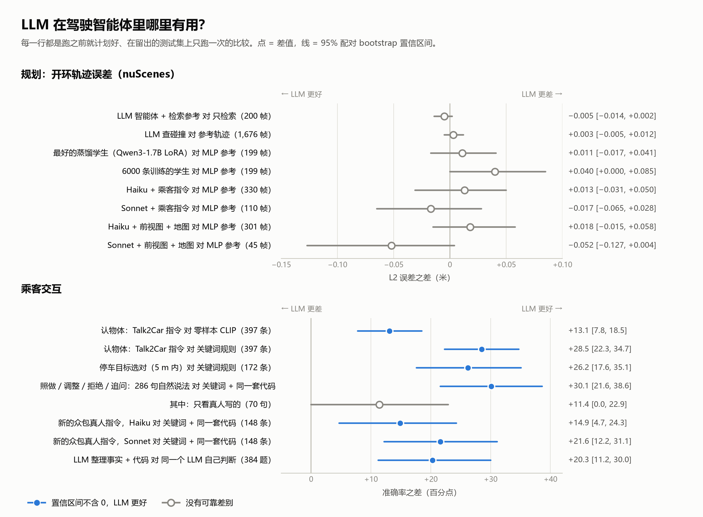
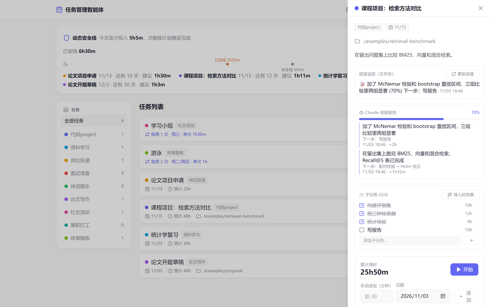
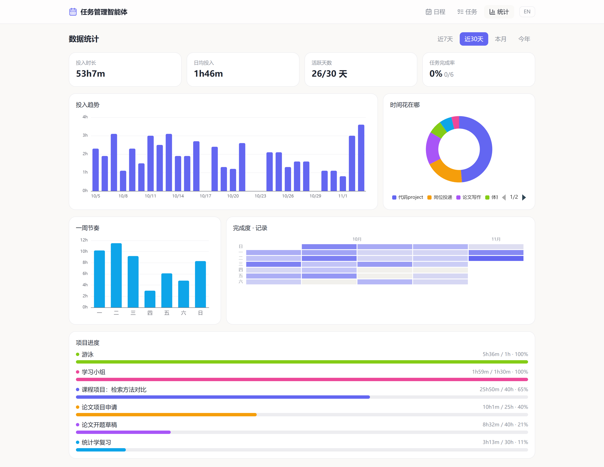

项目一 · Python、Claude API、nuScenes · 2026 年 10 月
DriveAgent：LLM 到底能帮驾驶智能体做什么？
我在 nuScenes 驾驶数据集上搭了一个会调用工具的 LLM 智能体，并在留出测试集上和更简单的方法比较。每个测试只跑一次，判定规则事先写好。
0.609 m
18 维特征 MLP 的轨迹误差
规划：LLM 帮不上忙。这个小 MLP 胜过 LLM 智能体和 12 个蒸馏出来的小模型。
81.6%
对比 CLIP 68.5%、关键词规则 53.1%
把话对应到物体：明显有用。LLM 能找出乘客指的是哪个物体。
+20 个百分点
LLM 整理事实，代码做决定
最好的做法。LLM 把杂乱的输入整理成结构化事实，再由确定性的代码执行规则。
一个匹配问题：乘客说的是哪个物体？
每种方法用的都是同一批 397 条留出 Talk2Car 指令和同一组候选物体。准确率，%。
关键词规则
53.1
向量匹配（零样本 CLIP）
68.5
LLM + 前视摄像头画面
81.6
系统怎么处理一条请求
- LLM 只负责整理。它把乘客的话变成结构化字段：指的哪个物体、要做什么、停在哪、有没有明说要违规。
- 代码负责决定。确定性规则对照地图检查这些字段，再决定照做、调整、拒绝还是追问。286 条自然说法里，判对 89.9%；关键词加同一套代码只有 59.8%。
- 拿不准就问，不乱猜。在 148 条新收集的指令上，"不吭声地做错"从 44.6%（关键词）降到 8.8%。
- 评估不放水。LLM 评审先和人工标注比对，一致率达到 95% 才使用。结果都附场景级 bootstrap 置信区间和 McNemar 检验。


Claude Haiku / Sonnet APIfunction calling结构化输出
CLIP 对照QLoRA 蒸馏bootstrap CI · McNemar · Holm
API 总花费约 32 美元
项目二 · TypeScript、Node.js、React · 2026 年 10 月
任务管理智能体：一个能接收 Claude Code 进度汇报的全栈应用
我每天都在用的本地任务管理工具。它把一天的安排排在时间轴上，算出今天至少要投入多少才能按时完成各项任务，同时记录用时、给出统计。我在别的项目里用 Claude Code 工作时，那个会话会通过接口把进度报告发给它，对应任务就自动更新。
需求文档和交互是我设计的，代码由 Claude Code 编写。界面可以在中英文之间切换，截图用的是演示数据。



整体结构
- 前端：React 18、TypeScript、Vite、Tailwind、TanStack Query、ECharts，支持拖拽排期。
- 后端：Express + TypeScript，Prisma + SQLite（10 个数据模型），11 组 REST 接口，用 zod 校验。
- 进度接口：其他会话
POST一份 JSON 报告，服务端校验后写入，并保存旧值以便撤销，也可以先试运行预览。服务没开时，报告先进收件箱，下次启动时自动写入。 - 每日检查：一个脚本调用本机的 Claude Code CLI，只看文件变化，判断每个追踪的文件夹有没有实质进展。
POST /api/progress-reports
{
"schema": "planner.progress/v1",
"taskId": 1,
"progress": { "summary": "加了 McNemar 检验和 bootstrap 置信区间", "percent": 70,
"next": ["写报告"] },
"subtasks": [{ "title": "统计检验", "done": true }],
"timeSpent": { "minutes": 120 }
}
TypeScriptNode.js · ExpressPrisma · SQLite
React · VitezodREST APIClaude Code CLI
项目三 · Python、Gmail API、Claude Code routine · 2026 年 10 月
gmail-digest：把所有邮箱汇成一份每日摘要
我把学校邮箱和个人邮箱都转发到同一个 Gmail。每天由 Claude Code 云端 routine 读取过去 24 小时的邮件，按一份纯文本提示词里写的规则分类，再给我发一封简短的摘要：哪些需要处理、哪些是真人写来的，其余的只用一行统计。
其他邮箱转发到 Gmail
→
fetch_inbox.pyGmail API，过去 24 小时
→
Claude按 ROUTINE.md 筛选、总结
→
send_digest.pyGmail API
→
手机每天一条通知

设计取舍
- 走 Gmail API（HTTPS）。routine 的云端沙箱封了 IMAP 和 SMTP，所以收信和发信都通过 Gmail API。
- 不需要 API key。筛选和总结由运行 routine 的 Claude 自己完成，规则写在
ROUTINE.md里，谁都可以改。 - 只用标准库。Python 约 770 行，不用
pip install。配置向导会走完 OAuth 授权、写好配置，并测试收信和发信。 - 方便别人复用。配置、转发其他邮箱、手机通知都有中英文分步指南。
Python 标准库Gmail API · OAuthClaude Code 云端 routine用提示词做配置